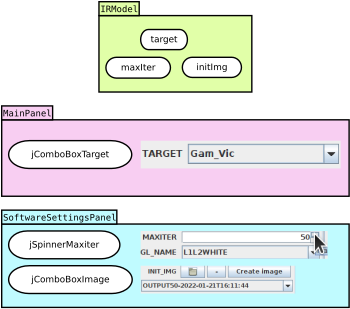
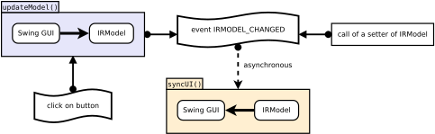
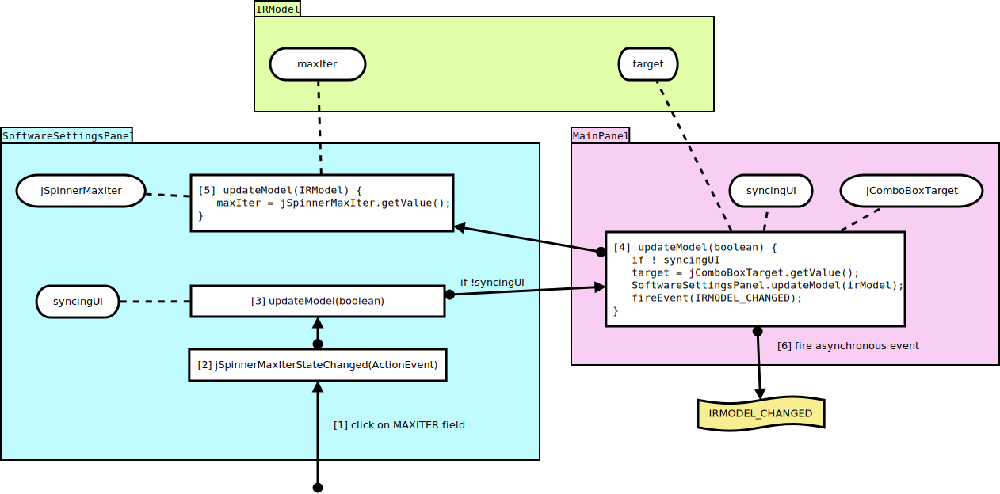
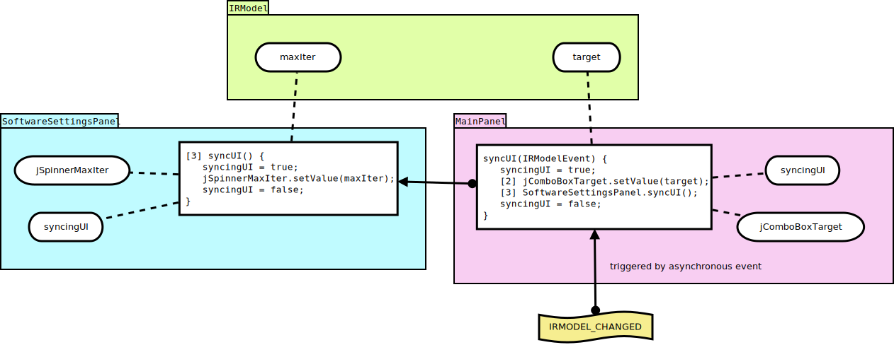

Here is what happen when you click on a button in OImaging.
In OImaging there is a central state in the IRModel class.
But every Swing field, such as the list selector for initial images jComboBoxImage, has its own state. This state contains not only the list of selectable images, but also the currently selected image, and some other state needed for the list widget to work.

There is indeed a duplication of state between IRModel and the panels MainPanel and SoftwareSettingsPanel.
The benefit of having a central state is that it is easier to maintain its consistency. Also, it makes it easier to modify the state of OImaging, you just have to call setters of IRModel.
The drawback of having a duplication of state is that you must maintain synchronization between IRModel state and Swing GUI fields states. This is achieved by the two mechanisms update model and sync UI:

The mechanism update model reads the states of the Swing GUI panels and writes it to the IRModel state.
The mechanism sync UI reads the state of IRModel and writes it to the Swing GUI panels states. You will have observed that sync UI is triggered only by the reception of an asynchronous event. This permits to compress a bunch of calls to syncUI into a single one. Observe also that a call to a setter of IRModel must cast an event in order to see the GUI updated. It is not automatic, you must manually cast the event.

The jSpinnerMaxIterStateChanged function is the handler for value change of the field jSpinnerMaxIter. Clicking on the up arrow updates the value of jSpinnerMaxIter, which trigger the handler.
Understand that there is an arborescence of panels. Here MainPanel is the root and SoftwareSettingsPanel is its child. When you click on a button of SoftwareSettingsPanel, there is a bottom up mechanism to call the root update model function. Then the update model functions of the children are called. The mechanism ends by casting an event asking for sync UI.
Note that all fields are written to the IRModel state, not only the field where there was an event.
You will have noticed the presence of syncingUI state and conditions. These are explained in the sync UI section.

Like update model, the mechanism sync UI starts with the root panel, and propagates to the children.
Note that we always surround the mechanism by setting syncingUI to true. Indeed, when we call setters on Swing GUI fields, it triggers their value change handlers, which triggers the update model mechanism. Here we do not need nor want to process update model, because we are currently making IRModel state and Swing GUI fields states identical. That is why the update model mechanism is aborted when syncingUI is true.
When you modify IRModel state, for example by calling one of its setter, you finally cast an IRMODEL_CHANGED event. However, it can happen that another event has been triggered and will resolve before your IRMODEL_CHANGED event. It becomes a problem when that other event modify a Swing GUI field and thus call synchronously the update model mechanism. Here is what happen:
IRModel.image state is "cat.png". Swing GUI image field state is "cat.png".IRModel.image.setValue("dog.png");, making IRModel.image state becoming "dog.png".SOME_EVENT.IRMODEL_CHANGED.SOME_EVENT is handled, and synchronously calls update model."cat.png" from Swing GUI image field state, and writes it to IRModel.image state.IRMODEL_CHANGED is handled, and synchronously calls sync UI. However it is now pointless because "dog.png" has been lost.Generally, make your handlers only call update model when some significant value update has occured.